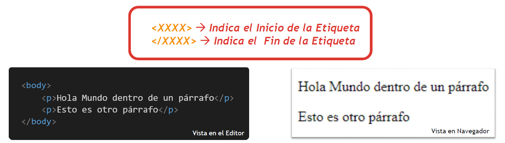
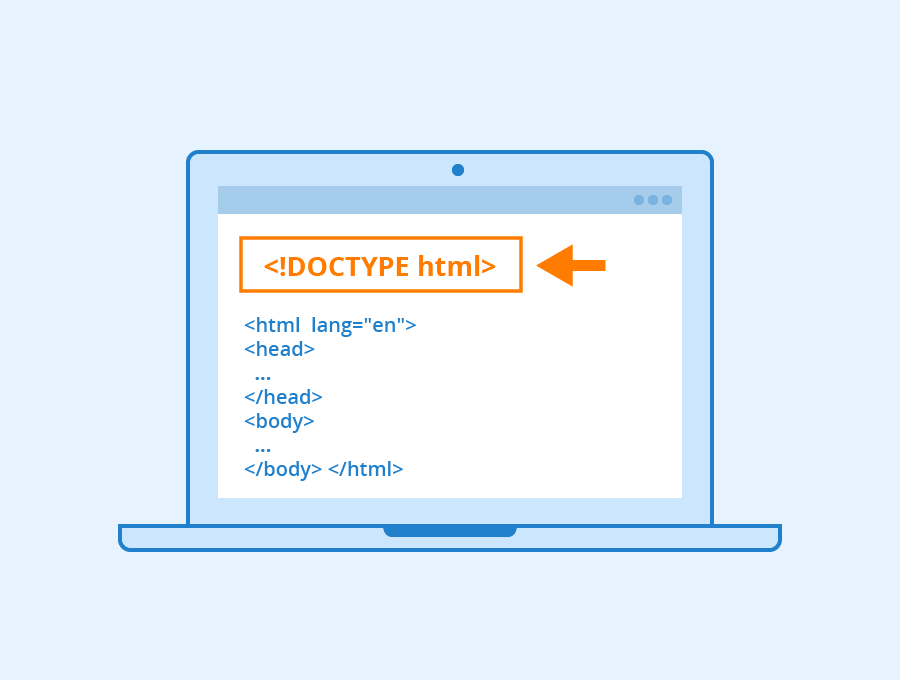

ame="viewport" content="width=device-width, initial-scale=1.0">
Introducción a HTML
Definición de Página Web
- Una página web, lo podemos definir como un documento de texto con marcas o etiquetas.
- Estas etiquetas, permiten presentar información al usuario: texto, imágenes, vídeos, fotos, tablas, etc
- Las marcas se llaman etiquetas o tags, NO SON UN LENGUAJE DE PROGRAMACIÓN COMO JAVA, PYTHON, PHP...
- Estas páginas, están pensandas para que sean visibles en cualquier tipo de dispositivo a través de navegadores web
- Los navegadores web sen encargan por lo tanto, de interpretar estas marcas con el fin de que los usuarios podamos visualizar y ver su contenido.
Definición de HTML
El acrónimo HTML, viene del nombre HyperText Mackup Language, es decir, Lenguaje de Marcado de Hipertexto.
Esto quiere decir, que las páginas web son muchos documentos HTML que están vinculados entre ellos por hipervínculos o hipertexto.
Las principales características que debemos tener en cuenta sobre estos, son las siguientes:
- La estructura HTML, viene definida por la W3Consortium
- Pueden aglutinar textos, audios/video, tablas, imágenes, etc. que podemos combinar a nuestro gusto.
Además, permite insertar enlaces a otras páginas mediante hiperenlaces.
- HTML,es un lenguaje de marcas o marcado, y está diseñado para visualizar contenido a través de los navegadores. NO es un lenguaje de programación
- Para que una página web sea considerada como tal, tiene que tener una extensión que sea .html. Ejemplo: index.html
¿Qué sucede cuando visitamos una página web?
 Las etiquetas en HTML, se escriben de la siguiente manera:
Las etiquetas en HTML, se escriben de la siguiente manera:
- Se escriben entre desigualdades, suelen ir en parejas y rodeando al texto al que aplica.
- Tienen una etiqueta de apertura y una de cierre.
- La parte de apertura contiene como mínimo el nombre de la marca o etiqueta, y el de cierre, empieza con el caracter / seguido del nombre de la etiqueta.

En HTML, además, podemos encontrarnos con etiquetas especiales que sólo tienen etiquetas de apertura.
Es lo que se conoce como monoetiquetas. Ejem: img, hr, br, etc.
Las etiquetas que ya tengan etiqueta de apertura y de cierre o que sean monoetiquetas, pueden tener atributos.
Los atributos con cualidades que facilitan el poder dotar a las etiquetas de unas características concretas.
Estructura de un página web y comentarios
Comentarios en HTML y en CSS
Los comentarios en HTML y en CSS, se utilizan para dar información al programador con el fin de informar de las cosas que vamos realizando.
Los comentarios deben ser claros, sencillos y concisos.
Los comentarios, NO van a aparecer en los navegadores.Es decir, quedan en la estructura interna de nuestra web, y sólo se ven si inspeccionamos el documento.
Para poder poner comentarios en HTML, utilizamos la siguiente sintaxis:
- Comenzamos con el simbolo menor que '<' seguido de '!' y de '--'
- Introducimos el texto con el mensaje a comentar
- Cerramos la estructura con '--' seguido de '>'
Para poder poner un comentario en CSS, la estructura que utilizaremos es similar a la que utilizaríamos en Java.
Ponemos /*texto a comentar */
Estructura de un documento HTML
La estructura de un documento HTML, se divide en dos grandes zonas o partes.
- Head: El head o cabecera, se caracteriza por ser la zona donde almacenaremos el nombre de la pestaña (title),
favicon, librerias externas de CSS y JS, metadatos, idioma, etc.
- Body: El body o cuerpo del documento HTML, que es donde vamos a introducir TODA la información de nuestra
web: imágenes, vídeos, texto, audios, formularios, etc.
Importante, para poder indicar el tipo de nomartiva / regla de HTML que vamos a utilizar, utilizamos la nomenclatura
'Doctype html', tal y como se muestra en la imagen.



Titulos en HTML
En HTML, podemos establecer o usar hasta 6 niveles de titulos.
Los titulos van estructurados desde el h1 hasta el h6, siendo el h1 el de mayor tamaño, y el h6,el de menor tamaño.
Este título es de nivel o tamaño h1
Este título es de nivel o tamaño h2
Este título es de nivel o tamaño h3
Este título es de nivel o tamaño h4
Este título es de nivel o tamaño h5
Este título es de nivel o tamaño h6
Insertar Textos en HTML
Para poder introducir texto en HTML, podemos hacerlo de las siguientes maneras:
- Escribiendo directamente dentro de la etiqueta de apertura y cierre del body
- Podemos utilizar saltos de párrafo. Para ello utilizaremos la etiqueta p con apertura y cierre.
- Podemos utilizar saltos de línea. Para ello utilizaremos la monoetiqueta br
Ejemplo de un salto de línea en HTML
Ejemplo de salto de párrafo en un HTML
La diferencia entre un un salto de párrafo y un salto de línea, es el tamaño de separación.
el salto de línea ocupa o es como si escribíeramos texto de seguido y se pusiera debajo uno del otro, mientras
que el salto de párrafo es como si escribiéramos un texto nuevo y la separación es mayor.
A parte de poder insertar texto en nuestro HTML, podemos utilizar un elemento de separaciónpara establecer
espacios o secciones dentro de un documento.
Este elemento es el hr que es una monoetiqueta que reperesnta una línea horizontal de separación entre secciones
dentro de un documento HTML.
Para poder customizar la etiqueta hr, podemos utilizar los atributos size (tamaño de grosor), width (para anchura)
y color (para establecer el color predeterminado)
Esto sería otra sección de texto en HTML separada por un hr.
Textos Preformateados en HTML
Los textos preformateados en HTML, consisten en insertar textos en HTML con las características que nosotros queramos.
Es decir, podemos escribir un texto de manera que se visualice tal y como lo hemos escrito en el body.
Hola esto
es un texto HTML
preformateado
function diHola{
console.log("Hola, esto es un mensaje de texto con la etiqueta pre y code en HTML");
alert("Buenos dias Vietnan, os voy a dar bien dado en la materia de LMSGE jejeje pero con cariño siempre");
}
Formatos de Texto
- Etiqueta b: sirve para poner el texto en negrita
- Etiqueta i: sirve para poner el texto en cursiva
- Etiqueta del: sirve para poner un texto
tachado
- Etiqueta em: sirve para poner un texto en énfasis. Es similar a la i, pero no es igual...
- Etiqueta small: sirve para poner un texto en pequeño
- Etiqueta sup: sirve para poner un super índice en un texto. Ejemplo: X2+X+3
- Etiqueta sub: sirve para poner un subíndice en un texto. Ejemplo: H2O
- Etiqueta mark: sirve para subrayar un texto. Ejemplo: vamos a aprobar todos... si traemos el jamón al profe
- Etiqueta q: sirve para poner
Citas pequeñas
de textos
- Etiqueta cite: sirve para poner Títulos de Trabajos
Etiquetas que ya no se utilizan en HTML5
Con la llegada de HTML5, algunas etiquetas que hasta entonces se utilizaban para poder dar apariencia y formato en HTML,
han sido descatalogadas y por lo tanto, ya no se utilizan.
A partir de ahora, para poder dar formato y apariencia a la estructura HTML, utilizaremos el lenguaje de estilos CSS.
La estructura que hasta ahora utilizamos en HTML para aplicar color, tipografía y tamaño al texto, eran los siguientes:
- face: Este es un atributo que nos pmermitía poder poner un tipo de tipografía concreta.
- color: Este atributo permitía poder aplicar la paleta de colores que quisieramos a nuestro texto
- size: Este atributo permitía poder aplicar un tamaño a nuestras fuentes y tipografías.
Ejemplo:
Esto es un texto de nivel 3 al que le he aplicado un color, y tipografía
Esto es un texto con color, tipografía y tamaño en HTML
Para poder alinear texto en HTML, debemos de utilizar el atributo align dentro de una etiqueta de estructura semántica.
Ejemplo:
Esto es un texto alineado al centro
Esto es un texto alineado al izquierda
Esto es un texto alineado al derecha